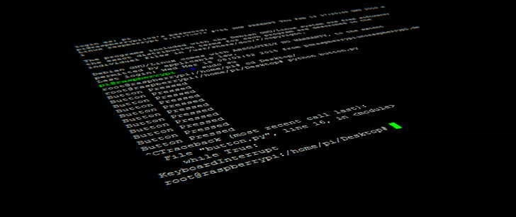

To-do List

Task Tracker is a project designed to track and manage tasks. In this project, we focus on building a command-line interface (CLI) application to practice core software development concepts such as CRUD operations, data storage, and user interaction.